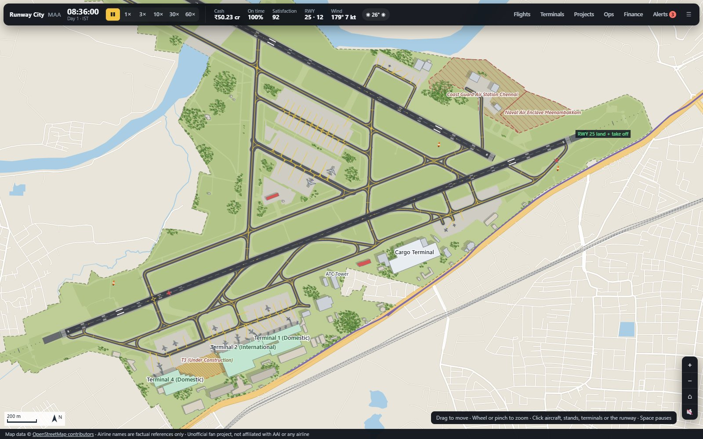
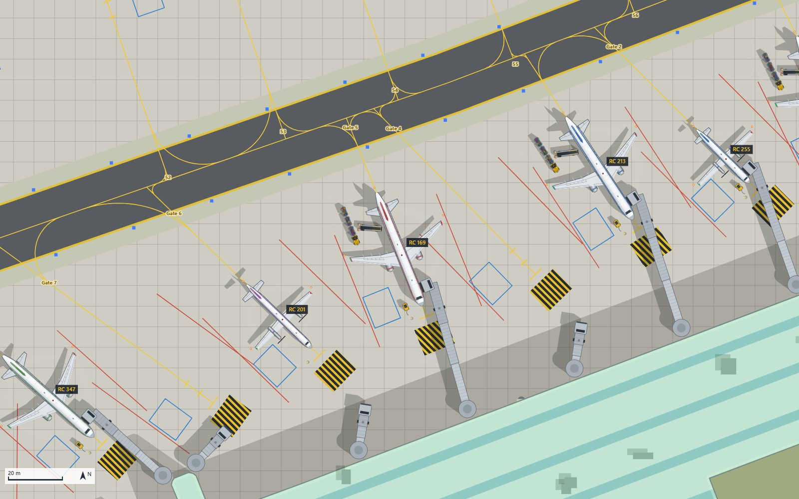
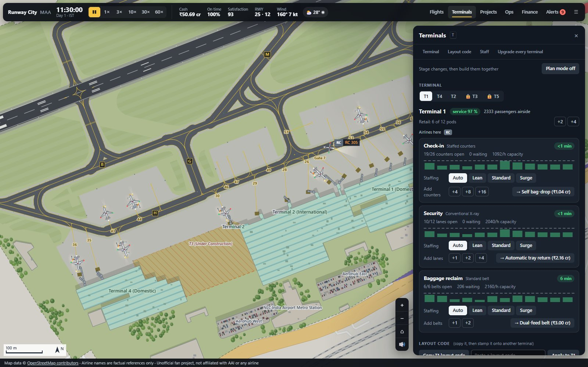
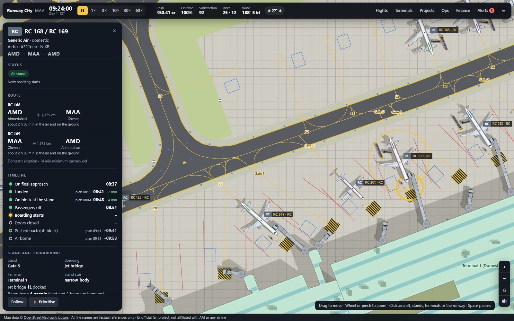
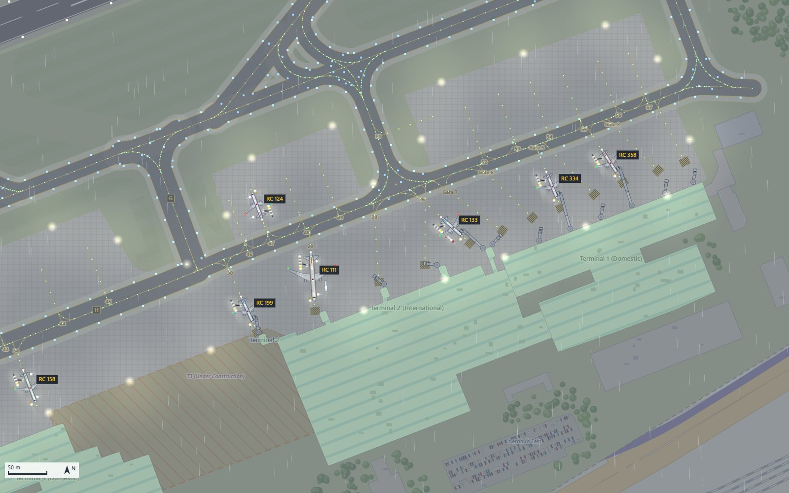

A top-down airport management game inspired by Chennai. Keep hundreds of flights moving from dawn to dawn, while the weather, the crowds and your budget all push back.

One airfield, modelled on a real one
Two crossing runways, a web of taxiways, busy terminals and the city around them. Choose which runway lands and which departs, and more than 250 aircraft a day will find their way through.

Every turnaround, in full view
Jet bridges swing out to the door. Bags ride the belt, fuel trucks pull up, caterers and cleaners get to work, and a tug pushes the aircraft back. Run short of crews or vehicles and you'll see the delay start.

Build in a click, not a chair at a time
Add check-in counters, security lanes and baggage belts in groups. Plan a whole expansion, then copy the layout to another terminal. Set the shifts, hire in teams, and watch the queues fall. Spend your time running the airport, not decorating it.

Click any flight
See where it's from, where it's going and what it's waiting for. Swap its stand, move it up the queue, or cancel it. Each day ends with a report card and a new policy to adopt.

The weather gets a vote
Monsoon rain slows the taxiways. Lightning clears the ramp. Smoke and fog halve your landings, and a cyclone can shut the runway altogether. Then night falls and the floodlights come on.
Pick your day
- A normal day Keep departures on time and nobody diverted.
- Deepavali rush Extra flights, and never enough stands.
- Bhogi smoke Dawn bonfires, and visibility gone.
- Cyclone day Protect what you can.
- North-east monsoon Afternoon storms roll in off the bay.
- Night shift Keep the apron and the runway lit.
- Check-in outage Boarding passes go back to manual.
- Career Finish Terminal 3 over several days.